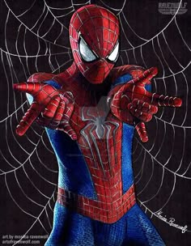
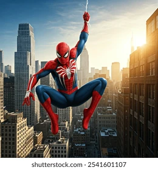
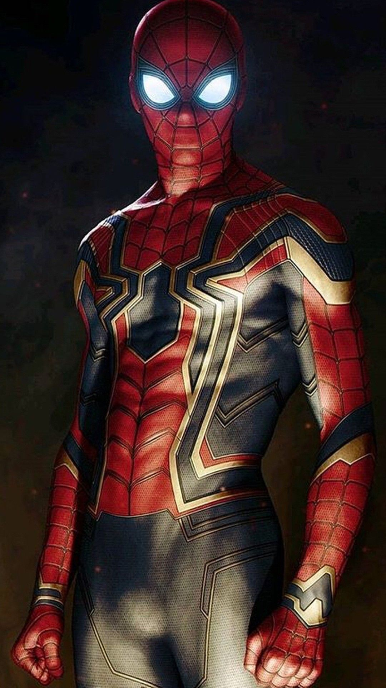

<!DOCTYPE html>
<html lang="en">
<head>
    <meta charset="UTF-8">
    <meta name="viewport" content="width=device-width, initial-scale=1.0">
    <title>Document</title>
    <link rel="stylesheet" href="style.css">
</head>
<body>
    <!-- <h1>Spider Man</h1>
    
    <h2>About</h2>
    <p><b>Spider-Man</b> is a superhero appearing in American comic books published by <a href="marvelComics.com" class="boxLink">Marvel Comics</a>. Created by writer-editor <b>Stan Lee</b> and writer-artist <b>Steve Ditko</b>, he first appeared in the anothology comic book <a href="amazing.com" class="boxLink">Amazing Fantasy.</a>#15(August 1962) in the 
        <a href="silver.com" class="boxLink">Silver Age of Comic Books.</a> He ahs been first featured in comic books, television series, films, and video games.
    </p>
    <div class="box">
        <h4>Publication Info</h4>
        <ul>
            <li><a href="publixher.com" class="boxLink">Publisher</a></li>
            <li><a href="first.com" class="boxLink">First Appearance</a></li>
            <li>Created By
                <ul>
                    <li><a href="stanLee.com" class="boxLink">Stan Lee</a></li>
                    <li><a href="steveDitko.com " class="boxLink">Steve Ditko</a></li>
                </ul>
            </li>
        </ul>
    </div>
    <h2>Creation & Development</h2>
    <p id="description">In 1962 with the help of his friends, Spider-Man became a superhero.
     In Spider-Man's first story, in Marvel Comics' Amazing Fantasy, no. 15 (1962),
     American teenager Peter Parker, a poor sickly orphan, is bitten by a radioactive spider.
     As a result of the bite, he gains superhuman strength, speed, and agility along with the 
     ability to cling to walls. Spider-Man, a popular superhero created by Marvel Comics, is
     the alter ego of Peter Parker, a high school student who gains superpowers after being bitten by
     a radioactive spider. These powers include enhanced strength, speed, agility, and a "spider-sense" 
    that alerts him to danger. He uses his abilities to fight crime in New York City, often alongside other hero</p>
    <div class="images">
        
        
        
    </div> -->
    <script src="app.js"></script>
</body>
</html>